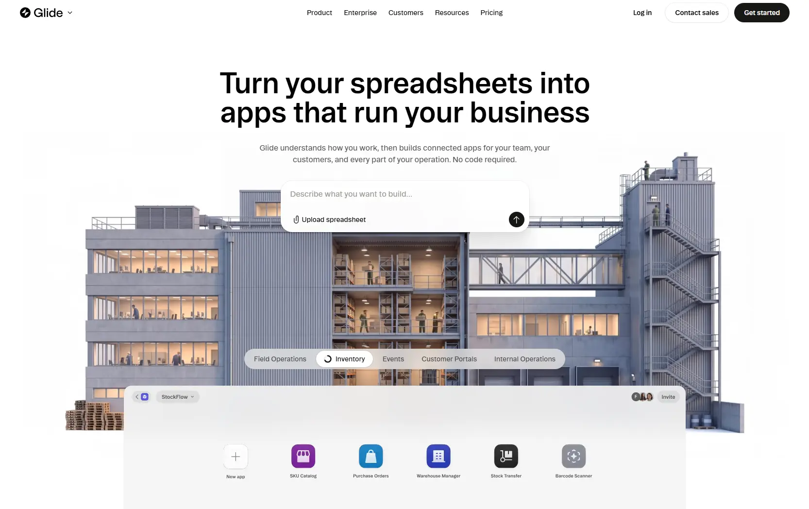

Сайт 029 · Многостраничный · Сервисы и приложения
Glide
9 место в чемпионате · 78.2 / 100
Screens/029.webp, доминирующий цвет занимает 70% кадра.Что это
Glide — корпоративный сайт конструктора внутренних бизнес-приложений: он превращает таблицу или текстовый запрос в готовое приложение. Сделан на Next.js с серверными компонентами и сборкой Turbopack, Tailwind четвёртой версии, хостится на Vercel, документация отдаётся через сторонний сервис. Типографика — две локальные гарнитуры: переменный гротеск для текста и засечный шрифт для крупных цитат. Первый экран — гибрид: пять растровых сцен со «зданиями» и панелями приложений, которые на клиенте подменяются видео в AV1 и H.264, с автопрокруткой вкладок за пять секунд, кольцом прогресса на SVG и липкой пилюлей вкладок.
Описание владельца коллекции: Эффектный корпоративный сайт ИИ-конструктора приложений по данным из таблицы. На главном экране — увлекательная анимация зданий в разрезе.
Чем интересен
- Первый экран — гибрид, а не одно медиа: в серверной разметке нет ни одного тега видео и ни одного канваса, а видеослой с источником AV1 живёт в отдельном чанке и монтируется только для активной и следующей сцены, полностью отключаясь при включённом «уменьшении движения»; проверка одного лишь серверного HTML дала бы неверный ответ.
- «Анимация зданий в разрезе» подтверждается только косвенно: у всех пяти сцен альтернативный текст вида «Field Operations — building», а папка ассетов называется scenes; рассмотреть сами изображения не удалось, поэтому слово «разрез» остаётся описанием владельца.
- Привязка первого экрана к скроллу сделана вручную на кадрах анимации, а не библиотекой: смещение и масштаб от единицы до 1,15 считаются своим обработчиком, тогда как вторая анимация на той же странице сделана уже на GSAP со ScrollTrigger — на одном сайте соседствуют три разных движка движения.
- Подписи клиентов и сценарии использования лежат в отдельном модуле сборки, а не в разметке: благодаря этому в бандле есть тексты вроде «Fuel tracking app» для Volkswagen, которых в серверном HTML нет.
- Сайт несёт очень плотный маркетинговый стек: больше десятка трекеров под единым гейтом локального хранилища и режимом согласия с отказом по умолчанию для тридцати двух регионов; при этом сам баннер согласия отдаётся только на клиенте и в HTML отсутствует.
- Битых ссылок нет: из двадцати трёх проверенных адресов все ответили успешно, включая ссылку на политику из баннера согласия, которую легко пропустить.
Все 30 номинаций сайта
Итог: 78.2 / 100 по профилю «Сервис, банк, образование». Первых мест в критериях: 5 (единолично 0, разделено 5), призовых мест: 11. Строки отсортированы по месту в номинации, ссылка ведёт к номинации в чемпионате.
- Релевантность и полнота
- Интуитивность навигации
- Адаптивность
- Читабельность
- Безопасность
- Попадание в номинацию
- Отзывы и рейтинги
- Полнота реализации
- Работа форм и поиска
- Доступность (a11y)
- Социальная ответственность
- Удобство интерфейса
- Соответствие заявленному
- Интеграции
- Мультимедийность
- Стабильность
- SEO-оптимизация
- Уникальность и экспертность
- Грамотность
- Прозрачность
- Экспертность
- Уникальность предложения
- Актуальность
- Современные технологии
- Целостность
- Интерактивные элементы
- Эстетика и оригинальность
- Инновационность в дизайне
- Соответствие бренду и ЦА
- Креативность в решении задач
Обоснования по разделам
- Юзабилити и UX
- Структура понятная, форма-запрос в первом экране защищена от менеджеров паролей, вкладки сцен липкие на широких экранах и превращаются в горизонтальный скроллер на узких; баннер согласия при этом отдаётся только скриптами.
- Дизайн и визуальное восприятие
- Почти монохромная светлая база со стеклянными слоями, пилюльными кнопками и очень мягкими многослойными тенями; два тёмных акцента — секция про данные и подвал с фотоколлажем.
- Контент
- Продукт, интеграции, шаблоны, безопасность с бейджами соответствия, документация, исследования и отчёты, сравнения и ответы на вопросы — материал покрывает и продажу, и техническую оценку.
- Техническое качество
- Серверные компоненты Next.js со сборкой Turbopack, Tailwind четвёртой версии, локальные шрифты, документация через сторонний сервис; карта сайта почти на две с половиной тысячи адресов, но её файл robots обрывается незакрытым комментарием, а фон видео подключается только на клиенте.
- Функциональность и интерактивность
- Форма-запрос в первом экране, виджет поддержки, партнёрская программа и тринадцать с лишним счётчиков под единым гейтом согласия; поиск есть только в документации, и его провайдер не определён.
- Доверие и репутация
- Условия, политика и открытый код в отдельном разделе, центр безопасности с бейджами SOC 2, GDPR и CCPA, адрес и телефон в микроразметке; знака охраны прав и регистрационных данных нет.
- Инновации и технологичность
- Гибридный первый экран, где растровые сцены на клиенте подменяются видео в AV1, ленивая догрузка сцен в свободное время, самописный параллакс на кадрах анимации и три разных движка движения на одной странице.
- Соответствие категории и целям
- Корпоративный сайт конструктора приложений закрывает и маркетинговую, и техническую часть; не хватает только собственного поиска и явной юридической информации.
Что не проверено
- Браузер не запускался: вычисленные стили, реальные сетевые запросы, живые видео и баннер согласия не наблюдались, всё описано по серверному HTML, стилям, чанкам и заголовкам.
- Растровые сцены первого экрана не рассматривались: подтверждены формат и размеры, но изображают ли они здание именно в разрезе — не проверено, единственное свидетельство это альтернативный текст и имя каталога.
- Для видеофайлов проверен только код ответа: байтовый размер, длительность и фактический кодек не измерены.
- Один внешний скрипт прочитать не удалось: его хост не разрешается из этой сети, поставщик не определён; второй внешний скрипт также не загружался.
- Что именно аналитика отправляет в рантайме, не наблюдалось: доказуемы только контейнер, токены и их конфигурация в коде.
- Упоминания Sentry в коде относятся к встроенной интеграции PostHog, а не к отдельной библиотеке — отдельного Sentry в сборке нет.
- Устройство документации разобрано только по оболочке: версия сервиса, его аналитика и поисковый движок не определены.
- Значение переменной высоты шапки, используемой в липкой пилюле, не найдено ни в одном загруженном файле стилей.
- Отдельная карта сайта документации, объявленная в robots, не загружалась, поэтому общее число адресов неполное.
- Описание стиля выведено из имён классов и токенов, а не из вычисленных значений; контраст и фактические цвета не измерялись.
- Палитра взята из токенов и инлайновых заливок, а не измерена пипеткой по скриншоту.
- Соответствие скриншота 029.webp текущему состоянию сайта не проверялось, дата снимка неизвестна.
Паспорт
- Домен
- glideapps.com
- Тип сайта
- Многостраничный
- Категории
- Сервисы и приложения
- Подкатегории
- Продуктивность
- Для кого
- Продуктовым командам, Разработчикам, Агентствам
- Стиль
- Минимализм, Утилитарный техно
- Приёмы
- Скроллителлинг, Липкие секции, Параллакс, Микроанимации
- Технологии
- Next.js с серверными компонентами, Turbopack, React, Tailwind CSS v4, Framer Motion, GSAP со ScrollTrigger, Vercel, Локальные шрифты, Оптимизатор изображений, Fern для документации, Видео AV1 и H.264, Intercom, Аналитика и согласия
- Язык
- Английский
- Страна
- США — в микроразметке указан адрес 1 Blackfield Drive, Suite 2, #346, Tiburon, CA 94920 и телефон с кодом +1 415
- Автор
- не определено: дизайн-кредита и студии в разметке нет, файл humans.txt отвечает 404; внешняя находка о hero-анимации относится к прежней версии главной и текущим сайтом не подтверждается
- Год
- 2026
- Добавлен
- 2026-10-08
Палитра
- #FBFBFB — 70% кадра
- #9495A3 — 10% кадра
- #6E7080 — 7% кадра
- #524E58 — 3% кадра
- #D4D3D3 — 3% кадра
измерено из Screens/029.webp: почти белая основа занимает 70% кадра, дальше нейтральные серые; заливки и токены сайта: секции #fbfbfb и #f1f0ea, тёмная секция #0d0d0d, основная кнопка #171715
- Режим
- Светлая
- Цвет фона
- Нейтральный
Чемпионат
9 место из 31 · 78.2 / 100 · первых мест 5 из 30 · сильнее всего: Релевантность и полнота (1 место)
- Интуитивность навигации — 1 место, 8 баллов
- Адаптивность — 1 место, 8 баллов
- Читабельность — 1 место, 8 баллов
- Релевантность и полнота — 1 место, 9 баллов
- Безопасность — 1 место, 8 баллов
Технические факты
- HTTPS
- да
- Meta viewport
- да
- Title
- AI app builder for internal business apps | Glide (49 симв.)
- Description
- Build custom business apps & agents with AI from a spreadsheet or a prompt. Ready in minutes, not months. Start free. (117 симв.)
- Open Graph
- да
- Структурированные данные
- да
- Sitemap
- есть: почти две с половиной тысячи адресов с датами от 2024 до 2026 года, плюс отдельная карта документации
- Robots
- есть: закрыты программные адреса и ссылки с рекламными метками, указаны две карты сайта; файл обрывается незакрытым комментарием
- Аналитика
- Google Tag Manager (GTM-TR84DXKH), Google Consent Mode v2 с отказом по умолчанию для 32 регионов, PostHog, Vercel Web Analytics, HubSpot, Intercom, LinkedIn Insight Tag, Reddit Ads pixel, G2 Crowd attribution, Common Room, Magellan AI, Roadway AI, PartnerStack
- Проверено ссылок
- 23
- Битые ссылки
- нет
- Контакты
- почта hello@glideapps.com в подвале, телефон и адрес — только в микроразметке; отдельные поддомены статуса и сообщества, ссылки на YouTube, Instagram, X, LinkedIn и GitHub
- Юридическая информация
- условия, политика и список открытого кода на страницах раздела legal; бейджи SOC 2 Type 2, GDPR и CCPA ведут в центр безопасности; знака охраны прав и года в подвале нет вовсе
Технологии с доказательствами
- Next.js с серверными компонентами — служебные пути сборки, поток серверных компонентов, заголовки предрендера и устаревания кэша, маркеры стриминга и отложенного клиентского рендеринга
- Turbopack — чанк с именем turbopack и глобальный массив сборщика в начале каждого чанка
- React — JSX-рантайм и хуки состояния, эффектов, ссылок и внешнего хранилища
- Tailwind CSS v4 — две тысячи вхождений переменных tw, слои темы и токены цвета, текста и трекинга прямо в CSS
- Framer Motion — компоненты движения с состояниями hidden и visible и настройкой однократного появления, а также учёт «уменьшения движения»
- GSAP со ScrollTrigger — регистрация плагина и таймлайн с зацикливанием и триггером, привязанным к границам секции, с действиями play, pause и resume
- Vercel — заголовки сервера и кэша, строгий транспортный заголовок на два года
- Локальные шрифты — правила @font-face на переменный гротеск с весом от 300 до 800 и засечный шрифт, оба с подогнанными метриками запасного Arial и предзагрузкой
- Оптимизатор изображений — адреса вида /_next/image с шириной и качеством, атрибуты data-nimg
- Fern для документации — robots прямо указывает, что раздел документации проксируется из Fern; ассеты документации идут с его домена, там же подпись «Powered by Fern»
- Видео AV1 и H.264 — источники с кодеками av01 и avc1 в первом экране и в секции про таблицу
- Intercom — идентификатор приложения в чанке и скрипт виджета, в том числе на страницах документации
- Аналитика и согласия — контейнер Google Tag Manager, режим согласия с отказом по умолчанию для тридцати двух регионов, PostHog с отключённой записью сессий, аналитика Vercel, HubSpot, партнёрская программа, LinkedIn, Intercom, Reddit, G2 и ещё несколько пикселей — все под единым гейтом локального хранилища
Что смотреть в первую очередь
Смотреть ради первого экрана: пять сцен со зданиями и панелями приложений, автопрокрутка вкладок за пять секунд, кольцо прогресса на SVG и липкая пилюля вкладок — при том, что видео подключается только на клиенте, а параллакс со масштабом написан вручную на кадрах анимации, тогда как соседняя секция уже на GSAP.
Похожие в коллекции
- ScreenTune — общее: Сервисы и приложения, Минимализм, Утилитарный техно, Липкие секции, Скроллителлинг, Микроанимации
- Aevion — общее: Утилитарный техно, Минимализм, Скроллителлинг, Липкие секции, Микроанимации
- Flect — общее: Минимализм, Скроллителлинг, Липкие секции, Параллакс, Микроанимации
- Orbify — общее: Сервисы и приложения, Утилитарный техно, Минимализм, Скроллителлинг, Микроанимации